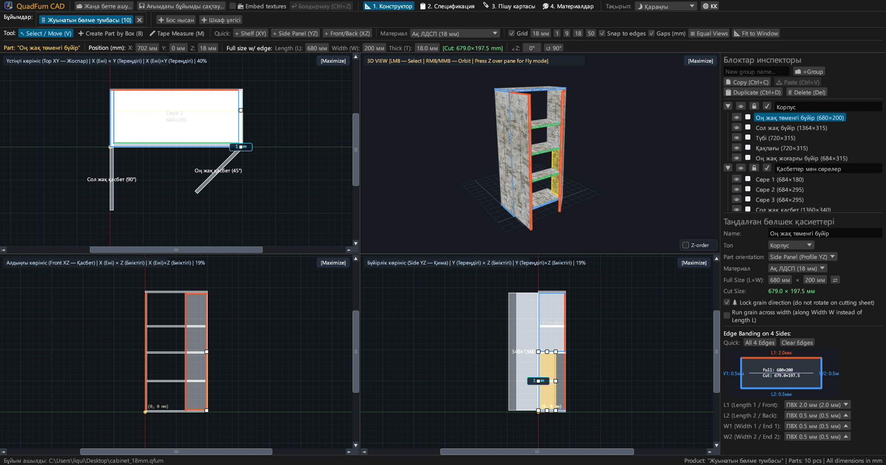
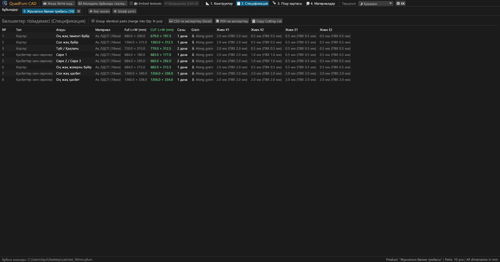
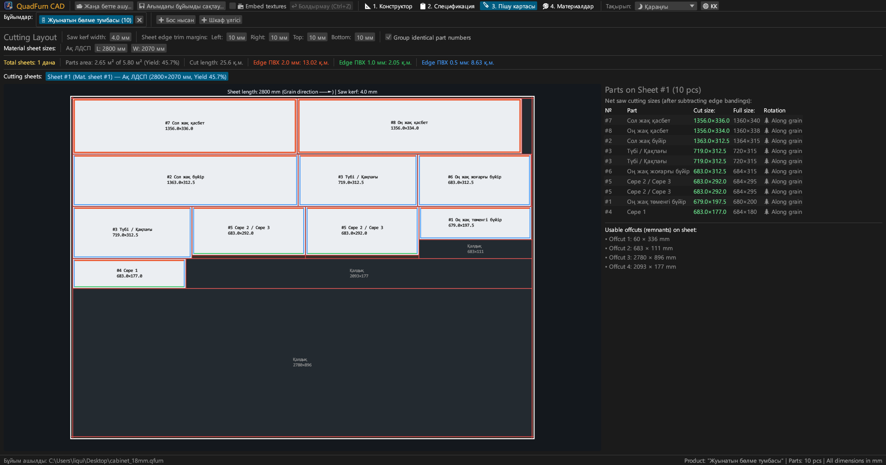
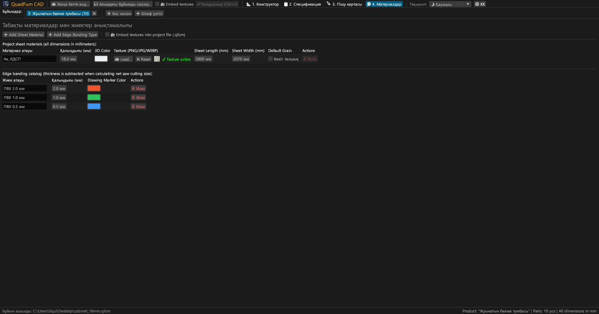
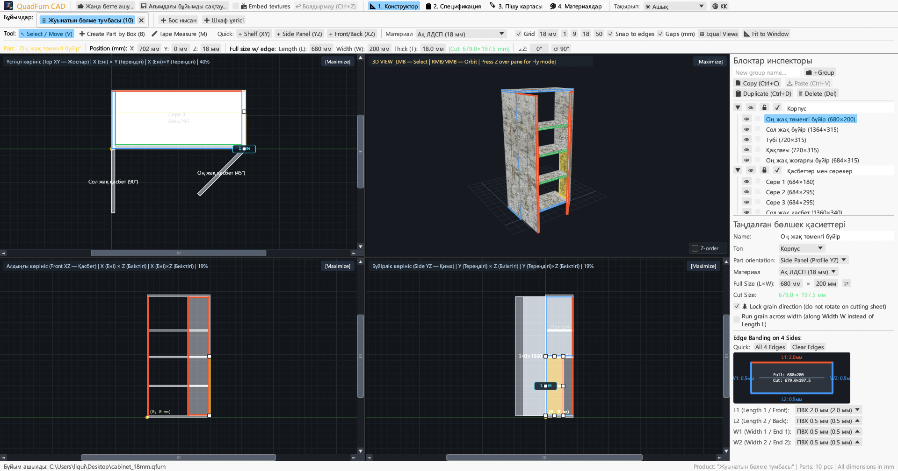
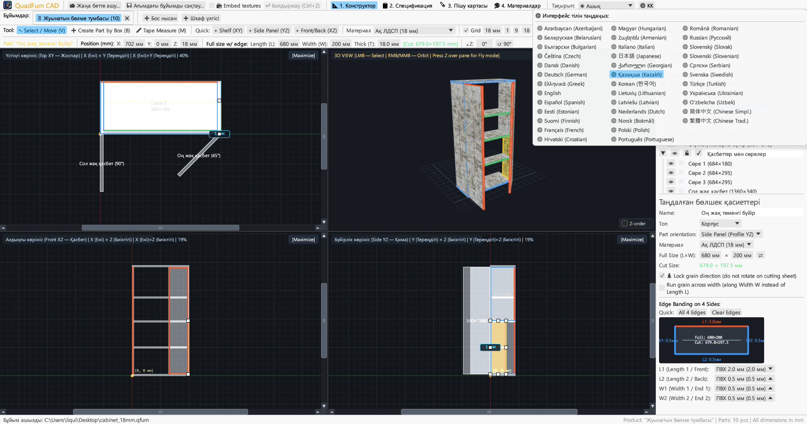

Жиһазшыларға арналған жылдам CAD. Синхронды 4 көріністі модельдеу, жиекті автоматты шегеру және парақтарды пішу — онлайн және компьютерде қолжетімді.

4 проекцияда сызуды, дәл сандық позициялауды және пішу карталарын оңтайландыруды біріктіреді.
Үш ортогональды проекцияда (Үстінен XY, Алдынан XZ, Бүйірінен YZ) скроллбарлармен және интерактивті 3D-тереземен бір мезгілде жұмыс істеу.
Сандық координаталарды (X, Y, Z), өлшемдерді (Ұ × Е × Қ) және бұрышты (∠Z) тікелей өріске енгізілетін калькулятормен басқару.
4 қырдың кез келгеніне ПВХ/АБС жиегін (0.4–2.0 мм) тағайындау және станок үшін нақты аралау өлшемдерін лезде есептеу.
Ағаш текстурасының бағытын, ара енін және шеттерді қырқу шегіністерін ескеретін жылдам пішу алгоритмі.
Бірнеше жобамен бір мезгілде жұмыс істеу. Материалдар мен жиектерді автоматты тасымалдау арқылы бөлшектерді көшіру және қою.
Басып шығаруға дайын A4 Альбомдық альбомды экспорттау: спецификация, 4 проекциялық сызбалар, пішу карталары және материалдар ведомосі.





Сыртқы тәуелділіктері жоқ толық автономды бинарлық файлдар.
Орнатуды қажет етпейтін тасымалды орындалатын файл.
Apple Silicon (M1–M4) және Intel x86_64 үшін әмбебап QuadFurn.app бандлы.
| Перне | Әрекет | Аймақ |
|---|---|---|
| V | Таңдау / Жылжыту құралы (өлшем маркерлері, таңдау жақтауы) | 2D-проекциялар |
| B | Бөлшекті жақтаумен құру құралы | 2D-проекциялар |
| M | Сызғыш құралы (дәл арақашықтықты өлшеу) | 2D-проекциялар |
| Z | Бірінші жақтан еркін ұшу режимі (Noclip, WASD + тінтуір) | 3D-терезе |
| ← → ↑ ↓ | Бөлшектерді тор қадамына жылжыту (Shift — екі есе) | 2D-проекциялар |
| Ctrl + C / V | Бөлшектерді көшіру / қою (жобалар арасында жұмыс істейді) | Барлық қойындылар |
| Ctrl + D | Бөлшектерді қайталау | Белсенді жоба |
| Ctrl + S | Бұйымды .qfurn / .json файлына сақтау | Белсенді жоба |
| Ctrl + Z | Әрекетті болдырмау (40 қадам) | Белсенді жоба |
| Delete / Backspace | Таңдалған бөлшектерді жою | Белсенді жоба |